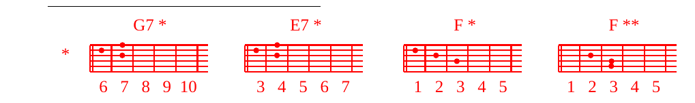

M.EMwanamke, tazama mwanao
mwanamke, tazama mwanao,
tazama mwanao, tazama mwanao!
A-Tazama mama yako, taD-zama mama Eyako.
M.+K.MaA-ria mama yangu, MG7 *aria mama A-yetu,
nGjoo, ukaishi Enami,
njGoo nyumbani mEwangu
E7 *tufundishe kumpenda MwanF *ao
kama ulivyompenda Ewewe,
E7 *tufundishe kumpenda MwanF *ao
kama ulivyompenda Ewewe.
M.ENaona kiu, naona kiu,
yote yamekwisha
yote yamekwisha
yote yamekwisha
M.+K.A-Maria, mama yangu, ...
M.EAskari, basi, walikuja
na kuona kwamba amekufa,
hawakumvunja miguu.
Bali, askari mmoja
alimchoma ubavu kwa mkuki
na mara ikaF **toka damu na Emaji,
damu na maji.
M.+K.A-Maria mama yangu, MG7 *aria mama A-yetu,
Gndiwe mama wa KaEnisa
E7 *litokalo ubavuni mwa F *Kristo:
mke wake, Hawa Empya.
E7 *litokalo ubavuni mwa F *Kristo:
mke wake, Hawa Empya.
A-Maria mama yangu, ...
